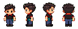

幫街坊搵返佢哋嘅包裹。接待、提貨、寄貨，仲要抽空幫送到店嘅新貨上架。

正在準備店面素材…
正在讀取本地進度…
所有客人耐性及班次時間已停止。
WASD / 方向鍵：移動
E：接待、揀貨、上架、退回或交貨
手機：左下搖桿，右下互動按鈕
揀錯貨？帶返原貨架，按互動退回。
接下來可選擇升級自提點，再進入不限時貨物上架。只在開下一天前自動保存。
你已完成一單提貨同一件新貨上架。正式班次有隨機寄貨客人；將接收嘅貨物放到紫色寄貨區。送貨員會親自將新貨送到收貨區。
正在封存本日帳目並保存下一天開門前的進度…
需升級商店嗎？
按下列順序選擇有空位的貨架，一次搬一件；只在翌日營業期間工作。